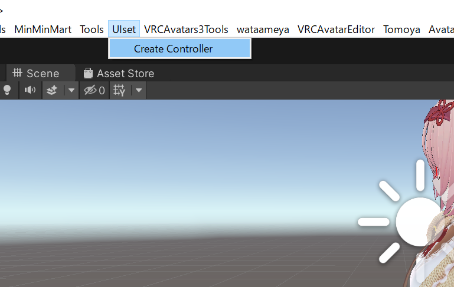

# このツールの目的
UIsetはVRChatのcontact機能を利用したアニメーション補助ツールです
自分で作成した物の出し入れのアニメーションや、衣装の切り替えのアニメーションなどをcontactを使ってやってみたいけど設定がよくわからない、という方の導入の助けになることを目的としています
# 前提条件 UIsetはVRchatのアバター向け補助ツールです
オブジェクトONOFFアニメーションの作成ができる方と、アバターのアップロードができる方を対象としています
またこのツールは以下の2点のunityPackageの導入を前提としております
# 導入方法
- 以下のリンクからlilToonとModularAvatarをダウンロードしてプロジェクトにインポートしてください
- UIset.unityPackageをプロジェクトにインポートしてください
-
Assetフォルダに有るUIsetフォルダ直下のUIset.prefabをアバター直下にドラッグアンドドロップします


-
UIFXを開き、使いたいレイヤーを選択します。レイヤーはprefabのオブジェクト名と対応しています

-
レイヤー内のONに、ボタンを押したときにONにしたいアニメ
OFFにボタンをもう一度押したときにOFFにしたいアニメを設定します。
-
UIを非表示にします。
-
左手にある青い球体があることを確認します

このとき左手に球体がない場合はSpere_pointのMABonePRoxyから、アバターの左手薬指の先のボーンを参照させてください
MenuSphere_pointの中にあるMenuSphereから位置を調整する事ができます
-
メニューの中身は以下のようになっています

- ①閉じるボタン
- ②アニメーションONボタン（数字はレイヤーと対応
- ③サブメニューを開くボタン
-
④ロックボタン（ONにするとメニューを閉じた後に開かなくなるため、暴発防止に使ってください。ロックボタンはEXメニューにも追加されています

-
⑤サブメニューのアニメーションONボタン
サブメニューのアニメーションはすべてサブメニュー内でいずれか一つしか選択できないようになっています
例えばサブメニュ1-1がONになっている状態で、サブメニュー1-2をONにするとサブメニュー1-1が自動的にOFFになります
サブメニュー内をすべてOFFにしたいときは、ONになっているオブジェクトをもう一度タッチしてください
- ⑥サブメニューを閉じるボタン
- 後は自分で使いたいアニメーションを設定して、楽しんでみてください